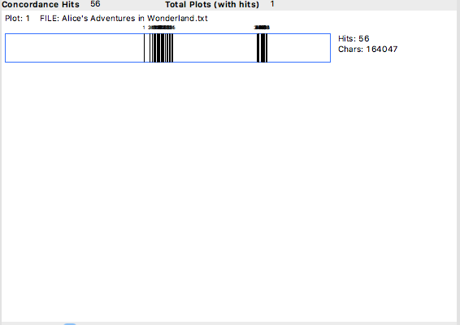
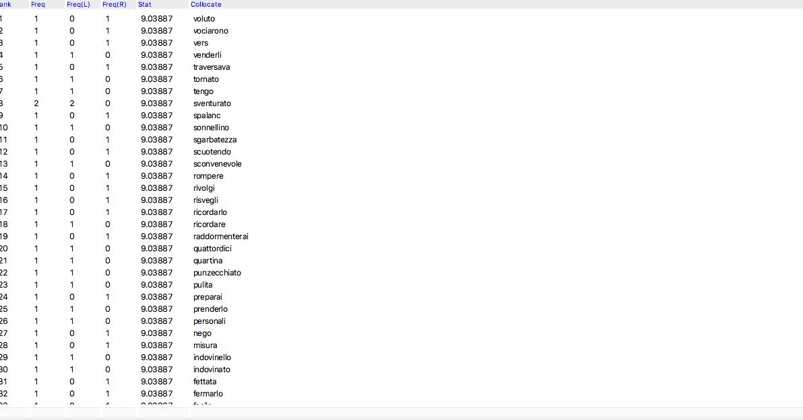
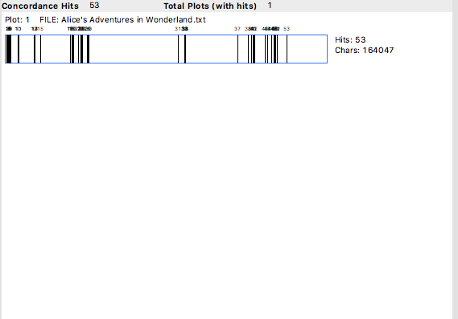
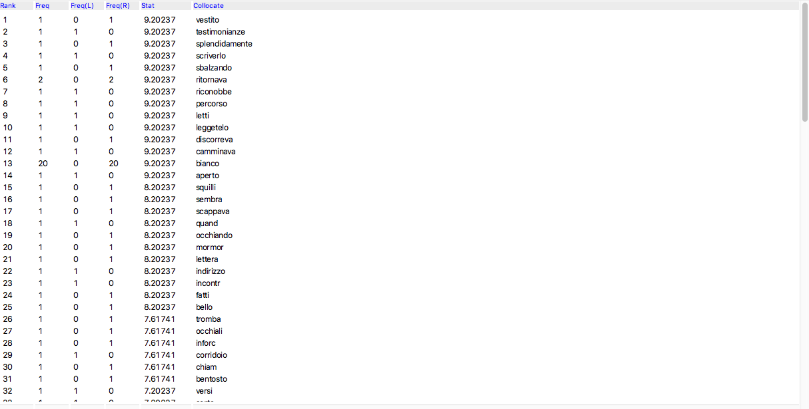
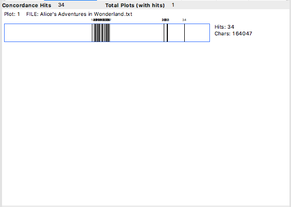
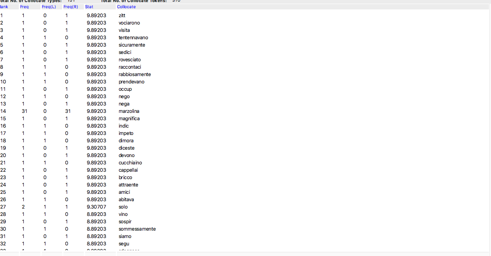

Per prima cosa, ho deciso di fare una ricerca nella scheda "Word List". Qui, ho trovato che questo personaggio è alla posizione 90 nella versione originale, mentre nella versione italiana è alla posizione 63.
Per questo motivo, possiamo dire che questo nome è più frequente nel libro italiano che in quello inglese. Inoltre, possiamo vedere che il nome del personaggio è stato accuratamente tradotto con il nome "Cappellaio".
Poi ho usato il parametro "Concordance Plot". Ho constatato che il personaggio appare con 56 risultati, il che rende questo personaggio, tra i tre che sono stati esanimati, quello che appare di più. Appare dalla metà del libro e a ¾ del romanzo. Nessuna discrepanza è stata trovata nella versione italiana.
Poi ho usato la scheda Cluster/N-Grams Ho notato che le parole che seguono "Cappellaio" sono verbi come "brontolò", "tremò", "cadde". Ci sono verbi che descrivono le sue emozioni e azioni. La traduzione italiana è particolarmente fedele.
Infine, ho usato la scheda "Collocates". Ho scoperto che le parole che avevano più probabilità di apparire accanto a "Hatter" hanno una connotazione più negativa rispetto agli altri personaggi. Sono parole come "sgarbatezza" e "tristezza".Le stesse parole sono presenti nella versione italiana, anche se va notato che il registro utilizzato è più alto rispetto alla versione originale.
Poi ho deciso di analizzare il personaggio del "Coniglio". Nella scheda "Word List" ho trovato che questo personaggio si trova alla posizione 110, mentre nella versione italiana è alla posizione 83.
Ancora una volta, possiamo dire che questo nome è più frequente nel libro italiano che in quello inglese. Inoltre, grazie alla scheda "Concordance", che mi permette di vedere la parola con un po' più di contesto, ho scoperto che il nome del personaggio originariamente chiamato W. Rabbit è stato tradotto con Coniglio B. In questo caso, il nome e il cognome sono stati invertiti per la traduzione.
Poi, ho usato il parametro "Concordance Plot". Si è trovato che il personaggio appare con 53 hit, il che lo rende il secondo personaggio più popolare tra quelli che sono stati esaminati in questa pagina. Inoltre, ho notato che la presenza di questo personaggio è più consistente poiché appare all'inizio, a metà e alla fine del libro. Nella versione italiana, ci sono però 50 riscontri, che possono essere spiegati con l'uso di metafore al posto del nome.

Poi ho usato la scheda Cluster/N-Grams Ho notato che, nella versione inglese, le parole che seguono il "Coniglio" sono verbi come "saltare", "trottare", "affrettare". Questi sono verbi di movimento. Nella versione italiana, si nota la presenza dell'aggettivo "bianco" e i verbi dei movimenti, ma più generali come "giunse", "fece", "fosse arrivato".
Infine, ho usato la scheda "Collocates". Ho scoperto che le parole che avevano più probabilità di apparire accanto a "Coniglio" si riferiscono alle sue azioni, "trottare", "affrettarsi", e "bianco", e "buco". Le stesse parole sono presenti nella versione italiana con l'aggiunta di parole come "occhiali", e "occhiando".

Infine, ma non meno importante, ho deciso di analizzare il personaggio della "Lepre Marzolina". Nella scheda "Word List" ho scoperto che questo personaggio si trova alla posizione 143, mentre nella versione italiana è alla posizione 133.
Anche in questo caso, grazie alla scheda "Concordance", che mi permette di vedere più contesto, ho scoperto che il nome del personaggio è stato tradotto senza mantenere il proverbio inglese “Mad as a March Hare”, dove stata preferita una traduzione letterale.
In seguito, ho usato il parametro "Concordance Plot". Ho trovato che il personaggio appare con 34 hit. Inoltre, ho notato che la presenza di questo personaggio è presente solo a metà e alla fine del libro. Nella versione italiana, ci sono però 31 riscontri.

Poi ho usato la scheda Cluster/N-Grams Ho notato che le parole che seguono la "Lepre Marzolina" sono verbi come "disse", "interruppe", e virgolette, che simboleggiano la presenza prominente di questo personaggio nella famosa scena del non-compleanno. Stranamente, nella versione italiana vediamo solo la parola "Marzolina".
Infine, ho usato la scheda "Collocates". Ho scoperto che le parole che più probabilmente appaiono accanto al nome del personaggio si riferiscono a oggetti presenti nella scena del non-compleanno come "cucchiaio", "forchetta" e "tazze da tè". Le stesse parole sono presenti nella versione italiana.
